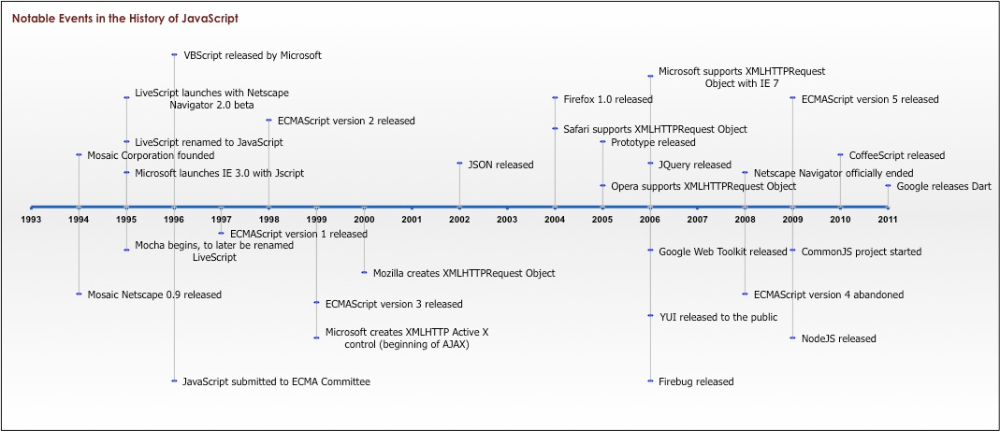
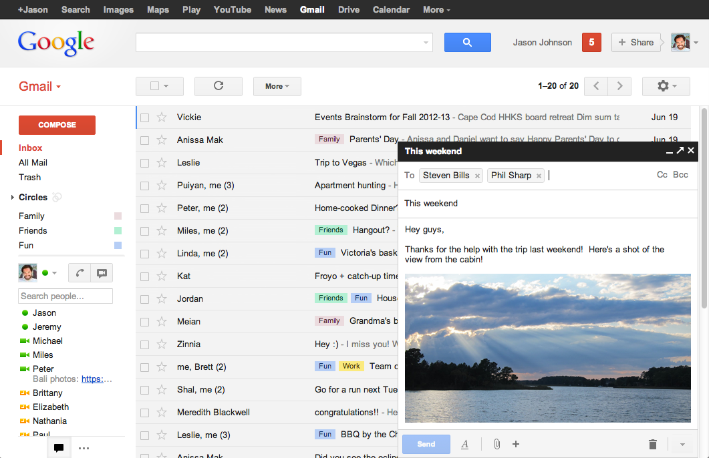

Why You May Not Need A Framework
A Brief History of JS Development

Source: ??? /
Quora
1990s - early 2000s
JS In The 90s Be Like
<SCRIPT LANGUAGE="JavaScript1.3">
<!--
// This script creates an events link for the current date
var dt = new Date();
var month= dt.getMonth() + 1;
if (month < 10)
month = "0" + month;
var date = dt.getDate();
if (date < 10)
date = "0" + date;
var year = dt.getYear();
if (year < 2000) // Y2K Fix, Isaac Powell
year = year + 1900; // http://onyx.idbsu.edu/~ipowell
document.write("<A HREF='events/" + year + month + "/" + year + month + date + ".html'>Today’s Events</A>");
// End -->
</SCRIPT> Source:
Sybren Stüvel
Source:
Sybren Stüvel
mid-2000s


Present Day
“Age of the Frameworks”
Source:
Craig Buckler / Sitepoint
Source:
Morten Liebach
Problems with Frameworks
- Components must fit the framework
- Components can't easily be used in another framework
- Adds friction to maintenance
- New devs must learn the framework
- Frameworks add extra weight to your app
- Frameworks are not performant on mobile
- Migrating to a new framework is painful
- Any given framework may be dead in 5 years
The Solution:
The (Web) Platform
Vanilla JS
- Prototype-based Objects
- DOM Traversal / Manipulation
- DOM Observers
- Animations
- Functional Programming
- Ajax
- Events
- Promises
- Modules
Components
- Custom Elements
- Templates
- Shadow DOM
- HTML Imports
Custom Elements
class AppDrawer extends HTMLElement {...}
window.customElements.define('app-drawer', AppDrawer);<app-drawer></app-drawer>Templates
<template id="app-drawer-template">
<style>#tabs { ... }</style>
<div id="tabs">...</div>
<div id="panels">...</div>
</template>const t = document.querySelector('#app-drawer-template');
const clone = document.importNode(t.content, true);
document.body.appendChild(clone);Shadow DOM (v1)
customElements.define('fancy-tabs', class extends HTMLElement {
constructor() {
super();
const shadowRoot = this.attachShadow({mode: 'open'});
const t = document.querySelector('#app-drawer-template');
const clone = document.importNode(t.content, true);
shadowRoot.appendChild(clone);
}
...
});HTML Imports
<link rel="import" href="../app-drawer.html">
<app-drawer active></app-drawer>Libraries
Routing, data binding, app state, authentication, etc.
npm install foobarimport foobar from 'foobar';Breakdown
- Runs on all modern browsers
- Transpiled from ES6 to ES5
-
3 polyfills: web components,
<dialog>, andElement.prototype.closest - Custom router based on page.js
- No Sass/LESS; just CSS (with variables & shadow DOM)
- Bundled using vulcanize & crisper (now polymer-bundler)
- Created polymer-lint and polymer-rename
The Future
“These are the early days of web components. I think Polymer is going to help more developers start using components. And in the next several years we'll see more contenders like Polymer staying close to native APIs but adding what developers claim is missing from the browser. Add 10 more years and nobody will know what we're talking about.”
@JoshSadler
“Age of the
FrameworksPlatform”
Source:
Tanaka Juuyoh